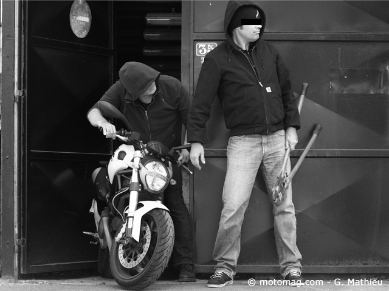
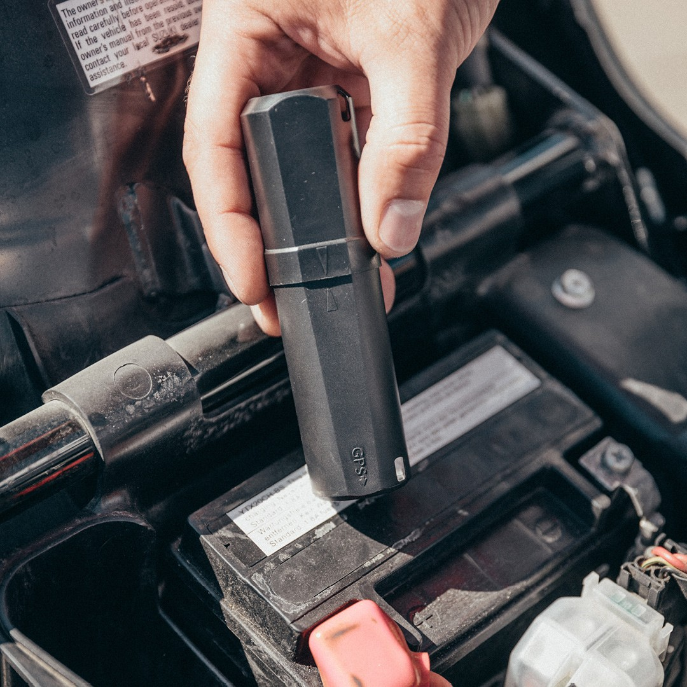

MotoTrack
1.Quels sont les risques ?
Les deux roues volés représentaient en 2021, 61,9 % des véhicules volés et sur la région parisienne seulement cela représente 34 727 motos/scooters sur l'année 2021.
2.Que fait MotoTrack ?

MotoTrack permet de localiser votre véhicule en temps réel 24 heures dur 24 avec une application mobile que vous appairez avec votre deux roues. Ainsi en cas de vol, il vous est possible de transmettre sa position aux forces de l'ordre et ainsi récuperer votre bien.
3.Installation et abonnement
Le boitier MotoTrack, au prix de 99 €, vous est envoyé chez vous et son instalation se fait par vos soin grâce à notre guide détaillé présent dans le coffret. L'abonnement est de 9,99 € par mois ou de 99,99 € par an.
Acheter